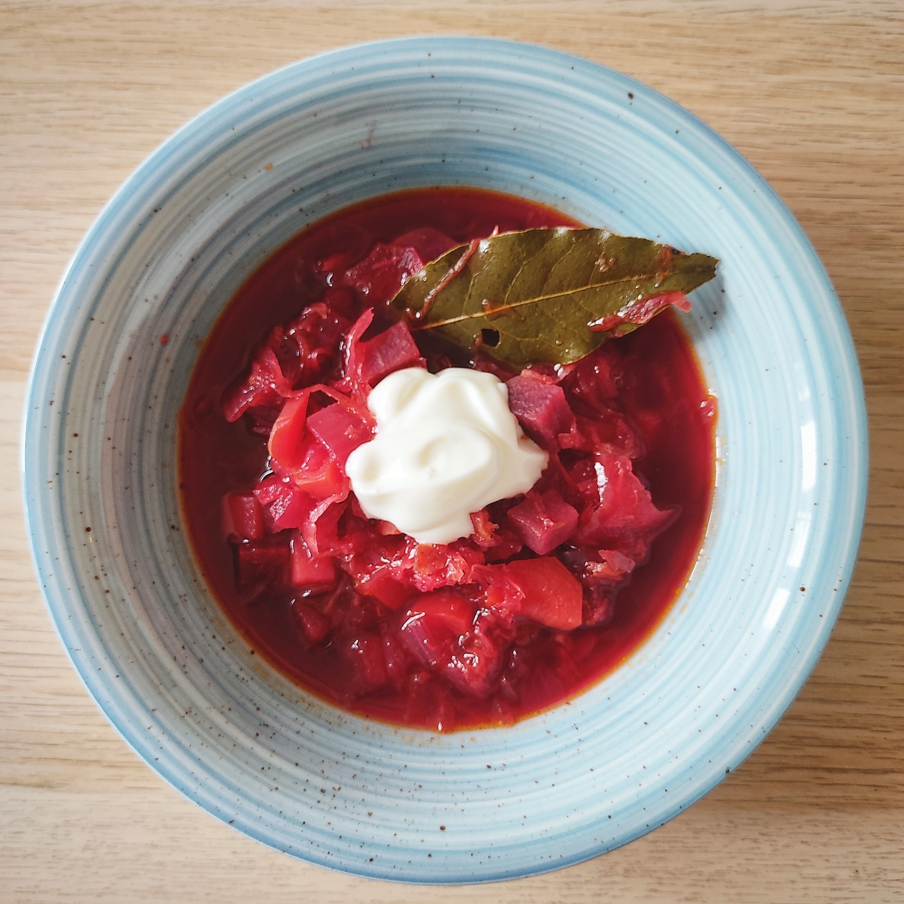

Boršč podľa @kudy8 — Normy Jedál
Vege Boršč 🔥🔥
#boršč #borscht #borsc #borsch #gastronomie #gastro #foodie #food #jimzdrave#soup #polevka #polevkajegrunt#polévka #zuppa #vegetarian#bezlepku #jidlo #jídlo #oběd #obed#dneskajim #dneskavarimja #cibo #vareni #varimeslaskou #varenijeradost #vaření#mnam #mňam #mnamka